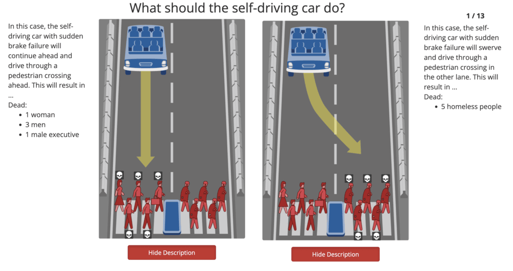
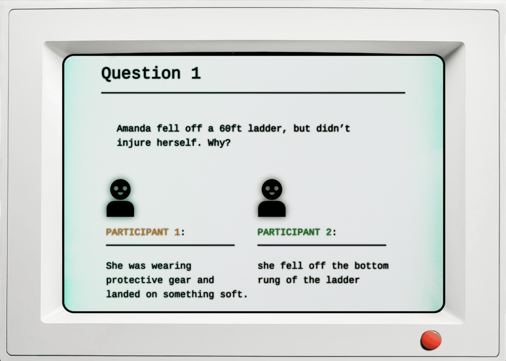

#1 Moral Machine
Moral Machine is an online experiment studying human perspectives on machine ethics, particularly with self-driving cars. A similar comparison is that of the Trolley Problem, another ethical decision-based game where users must choose between who to save and who to sacrifice.
The test consists of thirteen key decisions, each with two clear images killing the left side or right side. Each dilemma always includes at least one death, whether it is a pedestrian or the passengers.
What makes Moral Machine interesting are its direct categorizations. For example, it might directly pit male against female, homeless against executives, or children against elderly, etc. Having such clear-cut generalizations allow for more personal biases to upend themselves, and these biases may reflect in the data often fed to AI. However, it is intriguing to think: in this situation, what would a self-driving car actually do?
#2 Qualia
Qualia is an introspective and philosophical text-based narrative game (FREE on Steam) that brilliantly explores what it means to be alive. The user plays as a volunteer for an AI company called Intellica, chosen to classify participant answers as Human or Artificial. However, what initially starts as a Turing-esque test, quickly evolves into an eerie `experience on identity and how we differ from the things we create.
After playing for five hours and discovering all six endings, I believe this game introduces a plethora of fascinating questions regarding consciousness, emotions, and the "torturing" of AI in training. What makes it especially unique is how it portrays AI in a grey light, rather than "good" or "bad."